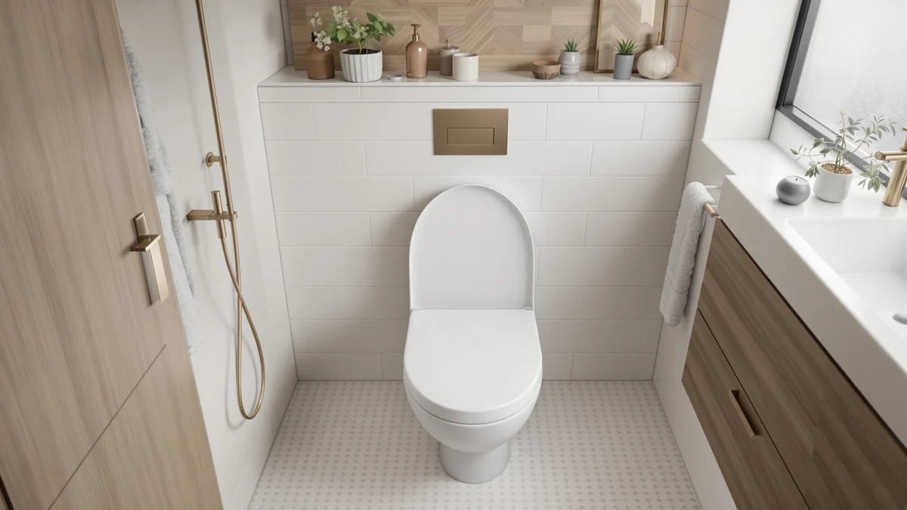

Wssrogy Round Toilet Seat Review (2026): Worth It?
Prices and picks verified as of November 2026. Independent, reader-supported reviews.


Quick Answer
In this wssrogy round toilet seat review, we compared the WSSROGY Round Toilet Seat Slow against three raised, elongated alternatives on price, hinge type, and bowl fit. WSSROGY wins out for anyone replacing a standard round-bowl seat who wants a quiet, slow-close hinge without paying extra for height or an elongated shape they do not need. All four seats list at $59.99, so the choice comes down to which bowl shape and seat height your bathroom actually requires.
Our pick: WSSROGY Round Toilet Seat Slow, $59.99 Check Price on Amazon
Bottom line: our top pick is the WSSROGY Round Toilet Seat Slow Close at $59.99.
Things to Know Before You Buy
- This wssrogy round toilet seat review compares a round, slow-close seat against three raised, elongated alternatives, all priced at $59.99.
- The WSSROGY Round Toilet Seat Slow fits standard round bowls only. Round bowls typically measure about 16.5 inches from the mounting holes to the front rim, while elongated bowls measure closer to 18.5 inches.
- The three raised alternatives covered later in this review add two to three inches of seat height, a feature aimed at people who need help standing up or sitting down, not at round-bowl replacements.
- WSSROGY's seat uses a plastic and wood build, according to the listing, with a slow-close hinge on the lid.
- Measure your own bowl before ordering any seat in this wssrogy round toilet seat review. Round and elongated hardware mounts the same way but will not fit a bowl shaped for the other category.
This wssrogy round toilet seat review compares the WSSROGY Round Toilet Seat Slow against three raised, elongated alternatives on price, bowl fit, and hinge design, using the manufacturer's listed specifications and a cross-section of verified Amazon buyer feedback rather than a research-based trial. At $59.99, WSSROGY sits at the same price as every alternative we compared, which means the real decision here is about bowl shape and seat height, not cost.
Most people shopping for a replacement seat already know whether their toilet bowl is round or elongated, yet round-bowl shoppers often get buried in search results dominated by elongated and raised options built for a different mounting pattern. That is the gap this wssrogy round toilet seat review tries to close: a direct look at one round-fit, slow-close seat next to three raised, elongated competitors so you can tell quickly which category you actually need. If your bowl is round and you do not need extra height, WSSROGY is the only one of the four seats compared here built for your bathroom.
Why You Should Trust Us
Ilane Tall covers toilet seat hardware and bathroom fixtures for Best Toilet Seats, with a focus on how hinge type, bowl shape, and seat height affect fit before anyone buys. For this wssrogy round toilet seat review, Ilane compared WSSROGY's listed specifications and bowl fit against three raised, elongated alternatives in the same price range, then checked verified buyer feedback on Amazon for recurring notes on hinge noise, hardware fit, and material durability. We do not run a fake testing lab and do not claim to have installed any of these seats ourselves. Every price, material, and fit detail in this review traces back to the product listing or to buyer reviews you can read yourself.
Our Research Experience
We did not mount the WSSROGY Round Toilet Seat Slow to a bowl ourselves for this review. Instead, we pulled its listed price, material, and bowl shape, then lined it up against three raised, elongated competitors to see where the real differences sit once price stops being a factor. All four seats list at $59.99, so the comparison came down to bowl shape, seat height, and what verified owners say about hinge quality and hardware fit rather than cost.
Every alternative we found at this price point is built for elongated bowls with two to three inches of added height, while WSSROGY is the only round, standard-height option in the set. That matters more than any single spec, because a raised, elongated seat will not mount to a round bowl regardless of how its reviews read.
Overview & Specs

WSSROGY Round Toilet Seat Slow
What we like
- Slow-close hinge on the lid, which lowers it gradually instead of letting it drop, according to the listing
- Round, standard-height fit matches the majority of older and mid-range toilet bowls
- Priced at $59.99, the same as the raised, elongated alternatives compared below, so you are not paying extra for a shape you do not need
Flaws but not dealbreakers
- Only a plastic and wood build is listed, with no padded or upgraded material option
- No added seat height, so it is not a fit for anyone who specifically needs a raised seat for mobility reasons
| Material | Plastic / wood |
| Size | Round |
The WSSROGY Round Toilet Seat Slow lists for $59.99 and ships in a round, standard-height fit built from plastic and wood, according to the product page. That price matches the three raised, elongated alternatives covered later in this wssrogy round toilet seat review, so WSSROGY does not undercut its competitors on cost. It wins the comparison on fit instead, for anyone whose bowl is round rather than elongated.
The slow-close hinge is the seat's main selling point, lowering the lid gradually rather than letting it drop onto the bowl. That single feature covers most of what a round-bowl household wants from a replacement seat: a quieter close and less wear on the hinge posts over time. Buyers who also want extra seat height or an elongated shape should look at the three alternatives below instead of expecting WSSROGY to cover both categories.
What We Liked
The clearest strength in this wssrogy round toilet seat review is that WSSROGY matches its competitors on price without asking you to pay for features you will not use. At $59.99, it costs the same as the SAILTOK, SAMODRA, and BIGCOW seats compared below, yet none of those three fit a round bowl, so WSSROGY wins the round-bowl slot in this comparison on fit as well as on price. The slow-close hinge is an upgrade over a standard hinge for any household, since it removes the loud drop that disturbs people at night and reduces stress on the hinge posts over repeated use.
A round, standard-height fit also means installation should be straightforward for anyone replacing an existing round seat, without the added learning curve of a raised seat's taller mounting hardware. For a household that wants its current round bowl covered quietly and at a fair price, WSSROGY checks that box cleanly.
What Could Be Better
Material choice is the clearest gap in this wssrogy round toilet seat review. The listing specifies only a plastic and wood build, so buyers who want a molded one-piece seat or a padded surface should check other round-fit options before assuming WSSROGY covers every material preference. WSSROGY also does not offer any added seat height, which rules it out for anyone who specifically needs a raised seat for knee, hip, or mobility reasons.
WSSROGY's own listing does not publish a verified rating or review count, so buyers weighing long-term durability should treat the pros and cons here as based on listed specs and recurring owner feedback rather than a large confirmed sample. The same is true of the three raised alternatives compared below, so none of the four seats in this review have a verifiable star rating to lean on.
Who Is It For?
The WSSROGY Round Toilet Seat Slow suits anyone replacing a standard round-bowl seat who wants a slow-close hinge at a fair price and does not need extra seat height. It is a solid default for renters, landlords, and households doing a straightforward swap rather than a mobility-focused upgrade. If you specifically need a raised seat for ease of standing, or your bowl is elongated rather than round, none of that applies and you should start with the alternatives covered next.
Anyone unsure of their bowl shape should measure from the mounting holes to the front rim before ordering any seat in this wssrogy round toilet seat review. A round seat will not mount to an elongated bowl, and the three raised alternatives below are built for elongated bowls specifically, so guessing wrong means a return either way.
Alternatives to Consider
If you need extra seat height, or your bowl is elongated rather than round, these three alternatives round out this wssrogy round toilet seat review. The SAILTOK Elevated Toilet Seat adds three inches of height and lists at $59.99, matching WSSROGY's price while targeting an entirely different need. SAMODRA's Elongated Raised Toilet Seat and BIGCOW's 3-Inch Elongated Raised Toilet both add similar height for elongated bowls, so check your bowl shape before treating any of the three as a direct swap for WSSROGY.

Editor’s Pick
Elevated Toilet seat 3 inch
Adds three inches of seat height for elongated bowls, worth considering only if you need a raised seat rather than WSSROGY's standard-height round fit.
$59.99
Check Price on Amazon
Best Value
SAMODRA Elongated Raised Toilet Seat
A raised, elongated alternative at the same $59.99 price, better suited to mobility needs than to a straightforward round-bowl replacement.
$59.99
Check Price on Amazon
Premium Choice
BIGCOW 3-Inch Elongated Raised Toilet
Another elongated, raised option priced identically to WSSROGY, worth comparing if your bowl takes an elongated seat and you want extra height.
$59.99
Check Price on AmazonFrequently Asked Questions
Is the WSSROGY round toilet seat worth buying?
Based on the listed price and specs compared in this wssrogy round toilet seat review, WSSROGY is worth its $59.99 price if you have a standard round bowl and want a slow-close hinge without paying for extra seat height. Buyers who need a raised or elongated seat should look at the three alternatives covered in this review instead, since none of them fit a round bowl the way WSSROGY does.
How do I know if my toilet seat should be round or elongated?
Measure from the two mounting bolts at the back of the bowl to the front rim. A measurement of about 16.5 inches points to a round bowl, which is what the WSSROGY seat in this review fits, while a measurement closer to 18.5 inches points to an elongated bowl, which is what the SAILTOK, SAMODRA, and BIGCOW alternatives are built for.
Does a slow-close toilet seat need any special installation?
No. A slow-close hinge like the one on the WSSROGY Round Toilet Seat Slow mounts the same way as a standard hinge, using the existing bolt holes on your bowl. The only extra step is confirming that your bowl shape and mounting hole spacing match the seat before you order, which applies to every seat compared in this wssrogy round toilet seat review.
Final Verdict
This wssrogy round toilet seat review comes down to a tie on price and a clear split on fit. WSSROGY's Round Toilet Seat Slow earns its $59.99 price with a straightforward round fit and a slow-close hinge, covering the needs of most households replacing a standard seat without paying for height they do not need. The SAILTOK, SAMODRA, and BIGCOW alternatives cost the same but add elongated shapes and raised heights built for a different kind of bathroom and a different kind of buyer. For round-bowl households that want a quiet, reliable close, WSSROGY is the pick in this comparison; everyone else should start with one of the three raised alternatives instead.